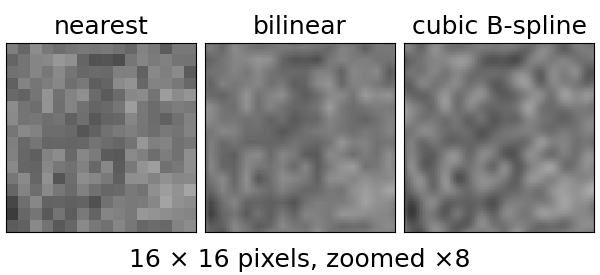
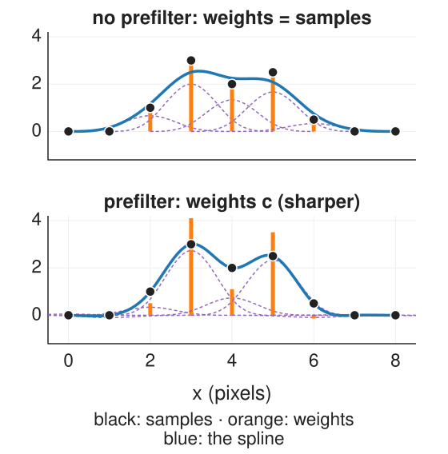
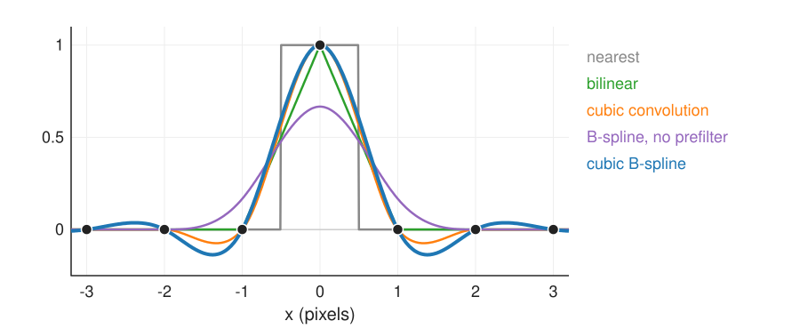
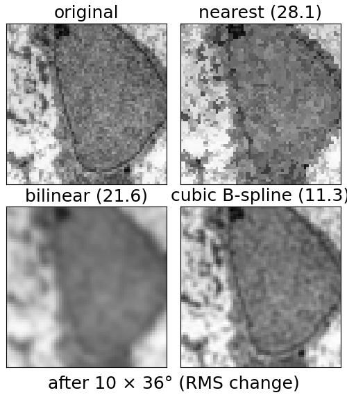
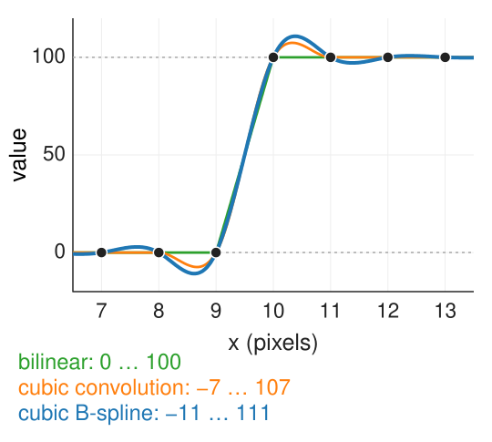
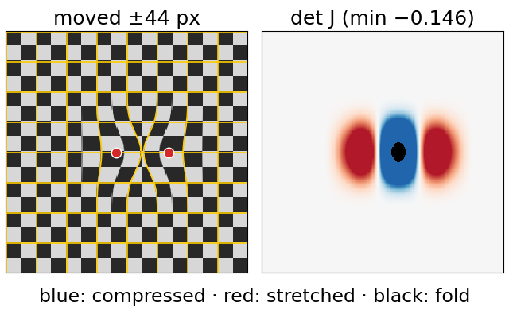

Splines on images: interpolation and free-form deformation
Image analysis
About this lecture
An image is a grid of samples of a surface. Interpolating it means choosing a surface through the samples; deforming it means moving that surface smoothly. Both are tensor-product splines.
Beyond bilinear: cubic convolution and the cubic B-spline with its prefilter.
Interpolators as low-pass filters; the repeated-rotation test.
Where cubics overshoot, and why labels still need nearest neighbour.
Free-form deformation: a coarse grid of control points moves every pixel smoothly; folding and the Jacobian.
Pointers: non-rigid registration, spline snakes.
Slides titled The math give the formulas and proofs; the ideas are complete without them.
From the images unit: resampling (rotate, zoom, warp) looks up the input at non-integer positions.
Nearest neighbour = the degree-0 B-spline (box): blocky, jumps.
Bilinear = the degree-1 B-spline in x times in y (a tensor product, unit 2): continuous, but with kinks along every pixel row and column (the slope jumps), and it blurs: halfway between pixels it averages.
Both are fine for display. They hurt when the result is resampled again, when sub-pixel positions matter (registration), or when derivatives of the interpolated image are needed (gradients for snakes and registration).

Micrograph: Robert M. Hunt, CC BY 3.0, via Wikimedia Commons.
Two cubic ideas
(a) Cubic convolution. A fixed kernel of width 4 with small negative lobes, chosen so that it interpolates (1 at its own pixel, 0 at the others) and is smooth (C¹). 16 pixels per output value. Image libraries call this “bicubic” (one-line pointer).
(b) Cubic B-spline. The smooth bell of unit 2 (C²), but it does not interpolate: its values \tfrac16, \tfrac46, \tfrac16 average neighbouring pixels. So first compute coefficientsc_k such that the spline passes through the samples: \tfrac16\big(c_{k-1} + 4c_k + c_{k+1}\big) = f_k along every row, then every column. This is the interpolation system of unit 3. Solving it is a cheap sharpening filter (the prefilter: two passes per row). After it the B-spline interpolates exactly, is C², and its derivatives are free.

The impulse test

One bright pixel 0, 0, 1, 0, 0:
B-spline without prefilter: \tfrac16, \tfrac46, \tfrac16 at the samples: peak 0.67, a blur.
With prefilter: through 1 at the sample and 0 at the others, with small negative lobes (down to −0.14).
Halfway between the bright pixel and its neighbour: nearest 1 or 0, bilinear 0.50, cubic convolution 0.56, cubic B-spline 0.60.
Prefilter. The condition \tfrac16(c_{k-1} + 4c_k + c_{k+1}) = f_k is the convolution c * \tfrac16[1\;4\;1] = f. Its inverse factors into two first-order recursive filters (Unser, Aldroubi & Eden 1991), with the pole z_1 = \sqrt3 - 2 \approx -0.268: c^+_k = f_k + z_1c^+_{k-1}\ \ (\text{left to right}),\qquad c_k = z_1\big(c_{k+1} - c^+_k\big)\ \ (\text{right to left}), with a gain of 6 and mirror boundary conditions for the start values. The impulse’s coefficients are c_k = \sqrt3\,z_1^{|k|}: 1.732, -0.464, 0.124, -0.033, \dots
Cost: 2 multiply-adds per pixel per pass, O(n), no matrix.
Every interpolator is a continuous kernel: a low-pass filter (Fourier unit). The ideal passes everything below the Nyquist frequency and nothing above (dashed); it is the sinc, infinitely wide, and rings.
Nearest passes much above Nyquist: aliases (copies of the spectrum) leak in.
Bilinear damps high frequencies below Nyquist: blur.
Cubic B-spline (with prefilter) is flattest in the pass band and steepest at Nyquist: closest to ideal.
The math: frequency responses
Kernels in the frequency domain (\omega in radians per pixel, sinc(u) = \sin(\pi u)/(\pi u)):
nearest: \operatorname{sinc}(\omega/2\pi); linear: \operatorname{sinc}^2(\omega/2\pi); B-spline without prefilter: \operatorname{sinc}^4(\omega/2\pi).
B-spline with prefilter (the cardinal cubic spline): H(\omega) = \frac{\operatorname{sinc}^4(\omega/2\pi)}{(2 + \cos\omega)/3}. The denominator is the response of \tfrac16[1\;4\;1], at least \tfrac13 (at \omega = \pi), so the prefilter exists and boosts high frequencies by up to 3.
At \omega = \pi/2: nearest 0.90, linear 0.81, cubic convolution 0.94, cubic B-spline 0.99. At 1.5\pi (an alias): 0.30, 0.09, 0.06, 0.01.
As the degree grows, the cardinal spline tends to the ideal sinc.
Resampling again and again
Rotate an image by 36° ten times: it is back where it started, but each rotation interpolated the previous result.
Interpolator
RMS change after 10 × 36° (micrograph, 128 × 128)
nearest
28.1
bilinear
21.6
B-spline, no prefilter
25.2
cubic convolution
14.8
cubic B-spline
11.3
Nearest shreds edges, bilinear and the unfiltered B-spline blur visibly; the cubic B-spline loses about half of what bilinear loses. The same applies to sub-pixel shifts in registration, smooth zooming, and gradients at sub-pixel positions (exact derivatives of the spline).

Try it: rotate ten times
Overshoot, and when to use nearest
Cubic interpolators have negative lobes: near an edge they overshoot. A step from 0 to 100 gives values down to −7 and up to 107 (cubic convolution) or −11 and 111 (cubic B-spline). For 8-bit images, clip to 0–255 (and say so); for measurements, know that the values near edges are not data.
Label images (object numbers, masks): any interpolator that averages invents labels that do not exist (recall the images quiz, Q6). Use nearest neighbour, whatever is used for the grey image.
Cubic convolution is local (4 × 4 pixels, no prefilter): useful when only a few output values are needed; the B-spline needs the prefilter over whole rows and columns first, then it is cheaper per value of quality.

Free-form deformation
A smooth, flexible deformation of a whole image with few numbers:
A coarse grid of control points (every 16 to 64 pixels), each with a displacement vector.
The displacement of every pixel is the tensor-product cubic B-spline of the control displacements; the image is warped with it (inverse mapping, recall the images unit).
From unit 2, for free: smooth (C²), local (a control point moves only a 4 × 4-cell neighbourhood), partition of unity (all control points moved by the same vector = a translation).
Drag one control point by 9 pixels (grid spacing h): the pixel at that control point moves 4 pixels, a pixel at the next control point 1 pixel, diagonally 0.25 pixel. Control points are not on the deformed grid: they steer it, like the control polygon of a curve.
One control point with \mathbf{d} = (9, 0): at the control point 9\,\beta^3(0)^2 = 9\cdot\tfrac49 = 4; one spacing away 9\,\beta^3(1)\beta^3(0) = 9\cdot\tfrac19 = 1; diagonally 9\cdot\tfrac1{36} = 0.25.
\mathbf{u} is linear in the \mathbf{d}_{kl}: its derivative with respect to a control displacement is just the basis value. This is what makes registration (finding the \mathbf{d}_{kl}) a smooth optimisation problem.
No folding as long as the Jacobian determinant \det(I + \nabla\mathbf{u}) > 0 everywhere. In 1D, x + d\,\beta^3(x/h) has derivative 1 + \tfrac{d}{h}\beta^{3\prime}(x/h) \ge 1 - \tfrac23\tfrac{d}{h}: one control point can move up to 1.5h before the map folds.
Folding
If neighbouring control points move too far towards or past each other, the map stops being one-to-one: parts of the image fold over others, and the Jacobian determinant (local area change) becomes negative.
It is shown as a colour map: blue = compressed, red = stretched, black = folded.
One control point alone can move far (in 2D up to 2.25h in one direction); two neighbours moved in opposite directions fold at about 1.2h each.
A safe rule for any pattern: keep every displacement below about 0.49 of the spacing in 2D (0.40 in 3D; Choi & Lee 2000). Registration methods enforce this, or penalise bending.

Try it: free-form deformation
Where splines on images lead
Non-rigid registration (optical flow day): find the control displacements \mathbf{d}_{kl} that make two images agree, with a smoothness penalty; coarse to fine by refining the control grid. The representation is this unit’s; the energy and its optimisation are there.
Spline snakes (snakes day): the contour is a closed B-spline with a few control points (unit 3), driven by image forces sampled from the B-spline-interpolated image with exact gradients.
3D: the same tensor product in three directions gives smooth volume interpolation and 3D free-form deformations. B-spline image pyramids exist too (the course uses the Gaussian one, scale space).
The splines day in one table
Spline
Degree
Through the data?
Smoothness
Local?
Used for
nearest
0
yes
jumps
yes
labels, masks
bilinear
1
yes
C⁰ (kinks)
yes
display, quick warps
cubic convolution
3
yes
C¹
yes (4 × 4)
general resampling
cubic B-spline + prefilter
3
yes
C²
yes (after prefilter)
precise resampling, gradients, registration
smoothing spline
3
no (near)
C²
yes
noisy data, outlines
NURBS
any
no (controlled)
by knots
yes
exact circles and conics, design
Summary
Interpolating an image = choosing a surface through its samples; nearest and bilinear are B-splines of degree 0 and 1.
Cubic convolution: a fixed interpolating 4 × 4 kernel. Cubic B-spline: smoother (C²), but needs the prefilter\tfrac16(c_{k-1} + 4c_k + c_{k+1}) = f_k (two recursive passes per row and column) to interpolate.
In frequency, the cubic B-spline is closest to the ideal low-pass; after 10 rotations it changes the image half as much as bilinear.
Cubics overshoot at edges; labels need nearest neighbour.
Free-form deformation: displacements on a coarse control grid, spread by the tensor-product cubic B-spline: smooth, local, a translation when all move together (4, 1, 0.25 px for a 9-px drag). Too large displacements fold the image (negative Jacobian determinant).